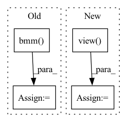

Pattern ID :23641

Before Change
dx = torch.bmm(x_coord_translate.type(torch.float), probs_over_locs).squeeze(2)
theta_mu = theta_vals[:, 0:1, ]
theta_mu = torch.bmm(theta_mu, probs).squeeze(2)
return z_content, theta_mu, dx
After Change
attn, probs, theta_vals, z_vals = encoder_model(y, 100)
//getting most probable t_r
val, ind1 = probs.view(probs.shape[0], -1).max(1)
ind0 = torch.arange(ind1.shape[0])
z_vals = z_vals.view(z_vals.shape[0], z_vals.shape[1], -1)
In pattern: SUPERPATTERN
Frequency: 3
Non-data size: 4
Instances
Fragment ID: 73846466
Project Name: smlc-nysbc/target-vae
Commit Name: 1b783b7504fade2115b5030c135f3a475050ff85
Time: 2022-01-06
Author: alireza.nasiry@gmail.com
File Name: run_clustering.py
M Class Name: AnonimousClass
N Class Name: AnonimousClass
M Method Name: get_latent(6)
N Method Name: get_latent(6)
M Parent Class:
N Parent Class:
M File Name: run_clustering.py
N File Name: run_clustering.py
M Start Line: 70
M End Line: 129
N Start Line: 59
N End Line: 141
'>
Before Change
feat_reshape = torch.stack(feat_list, dim=2)
weight_reshape = weight_list.unsqueeze(dim=2)
weighted_feat = torch.bmm(feat_reshape, weight_reshape).squeeze(dim=2)
return weighted_feat
After Change
num_node = feat_list[0].shape[0]
weighted_feat = torch.mul(feat_list[0], weight_list[:, 0].view(num_node, 1))
for i in range(1, len(feat_list)):
weighted_feat = weighted_feat + torch.mul(feat_list[i], weight_list[:, i].view(num_node, 1))
"""feat_reshape = torch.stack(feat_list, dim=2)
weight_reshape = weight_list.unsqueeze(dim=2)
'>
Fragment ID: 73846462
Project Name: pku-dair/sgl
Commit Name: cebdac589727fff315575d9fc063abcc222ddcf6
Time: 2022-02-24
Author: shengzeang@live.com
File Name: models/utils.py
M Class Name: AnonimousClass
N Class Name: AnonimousClass
M Method Name: two_dim_weighted_add(2)
N Method Name: two_dim_weighted_add(2)
M Parent Class:
N Parent Class:
M File Name: models/utils.py
N File Name: models/utils.py
M Start Line: 54
M End Line: 56
N Start Line: 54
N End Line: 59
'>
Before Change
attn_probs = nn.functional.dropout(attn_weights, p=self.dropout, training=self.training)
attn_output = torch.bmm(attn_probs, value_states)
// w_t is [batch, seq_length, n_heads, seq_length]
w_t = attn_output.permute(0, 2, 1, 3)
// [batch, seq_length, n_heads, seq_length]
w_tr_matmul = torch.matmul(w_t, relation_v_embeds)
After Change
attn_output = torch.bmm(attn_probs, value_states.view(*proj_shape))
// w_t is [batch, seq_length, n_heads, seq_length]
w_t = attn_output.view(bsz, self.num_heads, tgt_len, self.head_dim).permute(0, 2, 1, 3)
// [batch, seq_length, n_heads, seq_length]
w_tr_matmul = torch.matmul(w_t, relation_v_embeds)
'>
Fragment ID: 73846461
Project Name: joaolages/ratransformers
Commit Name: 87d3c27f618c060b396039f71734d515d3343a4b
Time: 2022-02-11
Author: joaop.glages@gmail.com
File Name: src/ratransformers/bart.py
M Class Name: BartRelationalAttention
N Class Name: BartRelationalAttention
M Method Name: forward(7)
N Method Name: forward(7)
M Parent Class: BartAttention
N Parent Class: BartAttention
M File Name: src/ratransformers/bart.py
N File Name: src/ratransformers/bart.py
M Start Line: 43
M End Line: 138
N Start Line: 43
N End Line: 139